Past work
This page shows previous websites I have made including websites I have made for University as well as websites I have made for businesses
Websites for businesses
Belladonna (Florist Website)
 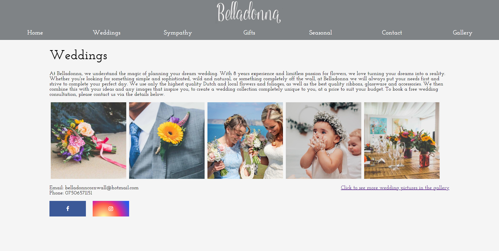
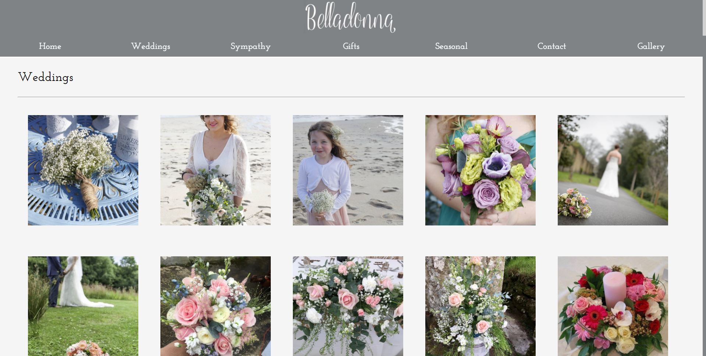
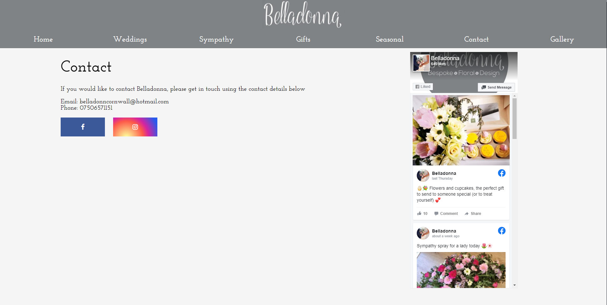
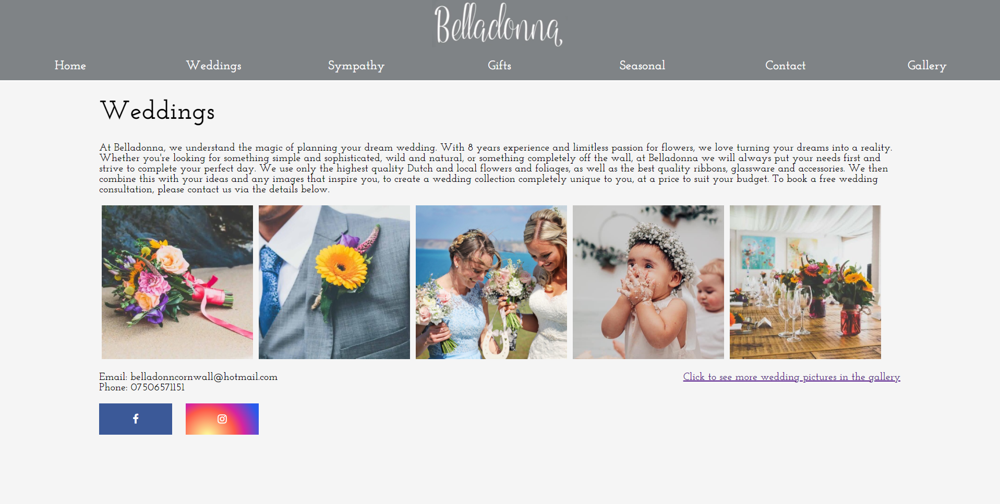
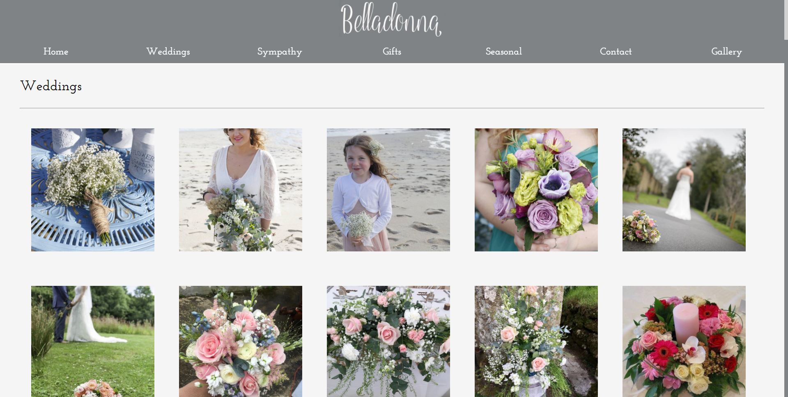
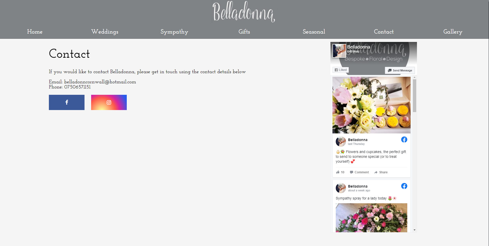
Websites for University
Pooch Parlor
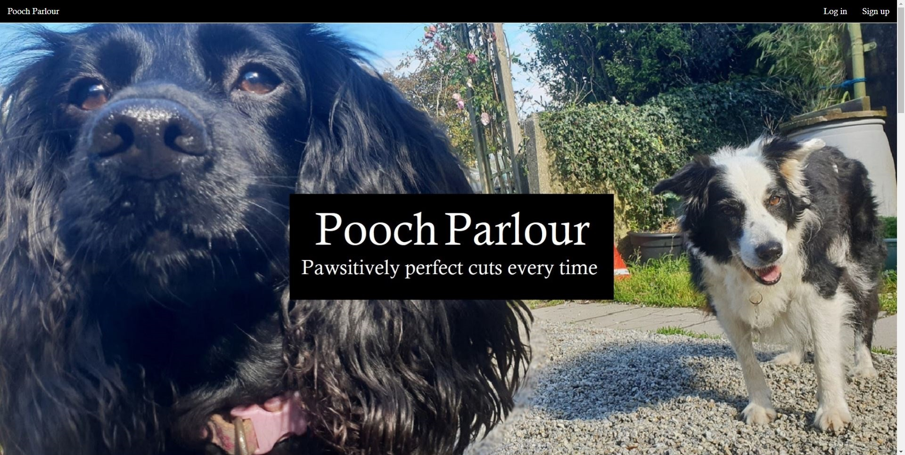 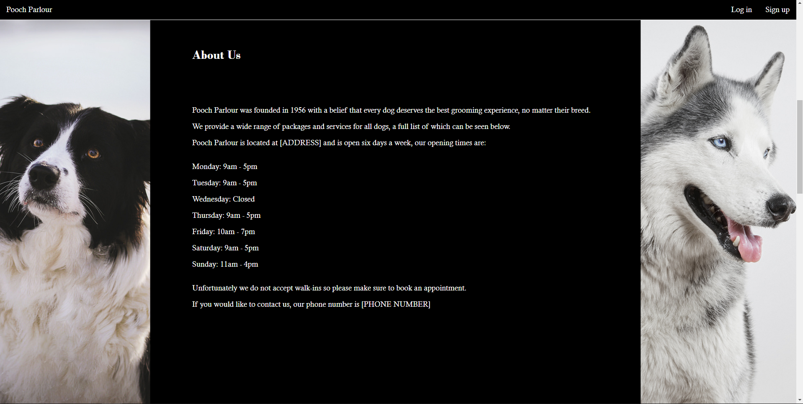

Pooch Parlor was the first website I created at University. It is a standard website made of HTML, CSS & JavaScript files.
The website is for a hypothetical dog grooming business, the focus of the coursework was design so some elements were placeholders however the purpose of the website is to show what services Pooch Parlor offers & to allow users to sign in and book their dogs in for a grooming session.
Pizza Time

 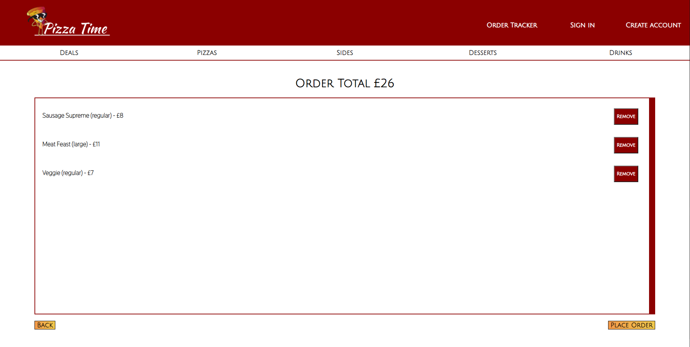
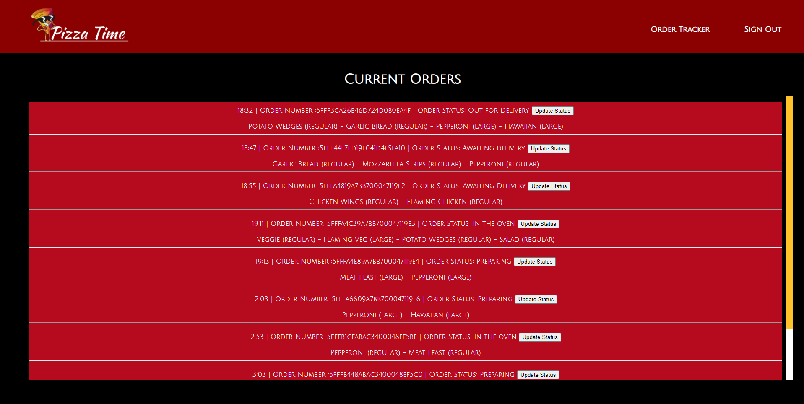
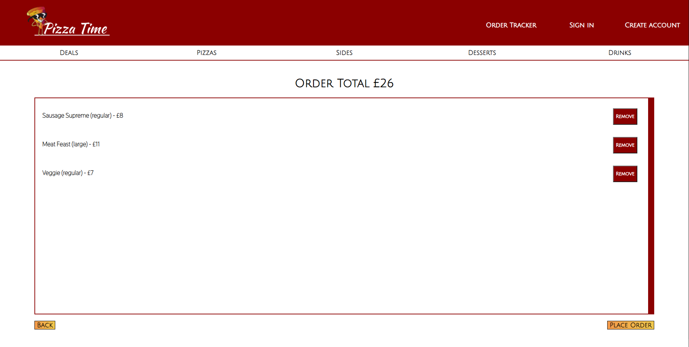
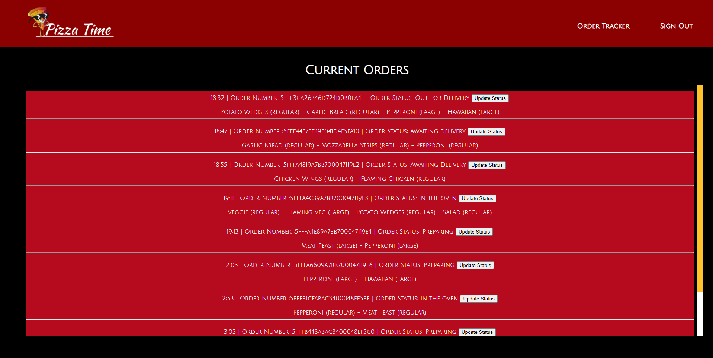
Pizza Time was the second website I created at University. It was designed for a hypothetical pizza company named Pizza Time and it's purpose was to allow customers to browse Pizza Time's menu, add items to their basket & checkout. There is also a staff section that lets staff see open orders and update the status of their order. As this website is responsive, customers, staff and delivery drivers can all use it so the business would be able to operate using this system.
The website was deployed by Travis CI to Heroku & is connected to a database within MongoDB that stores all the menu items, orders and user information. MongoDB Changestreams and WebSockets were implemented so that staff can see live updates of the orders collection and customers can see updates on their order via the Ordertracker page.
The website was made with the following technologies: HTML, CSS, JavaScript, JQuery, NodeJS, ExpressJS, JSON, Ajax & MongoDB.